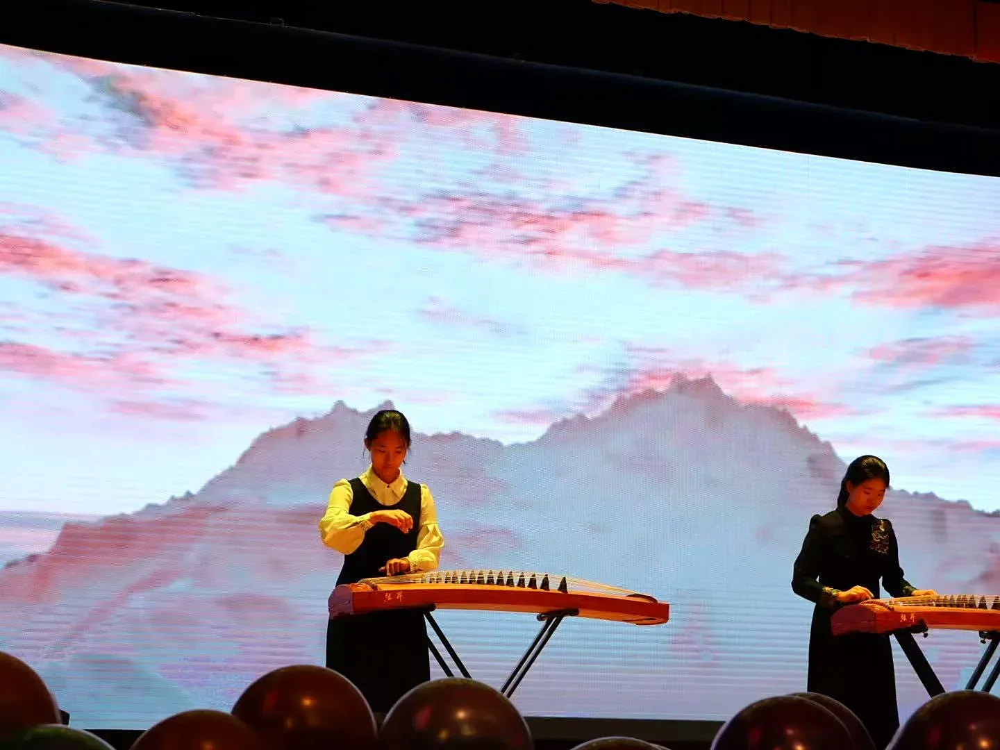
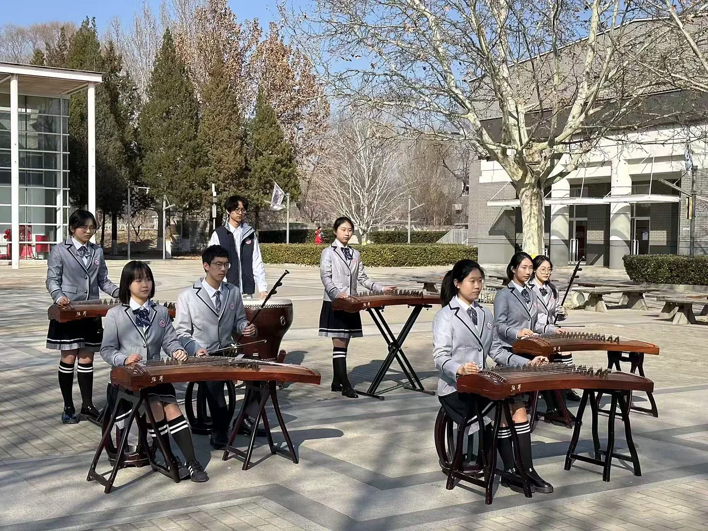
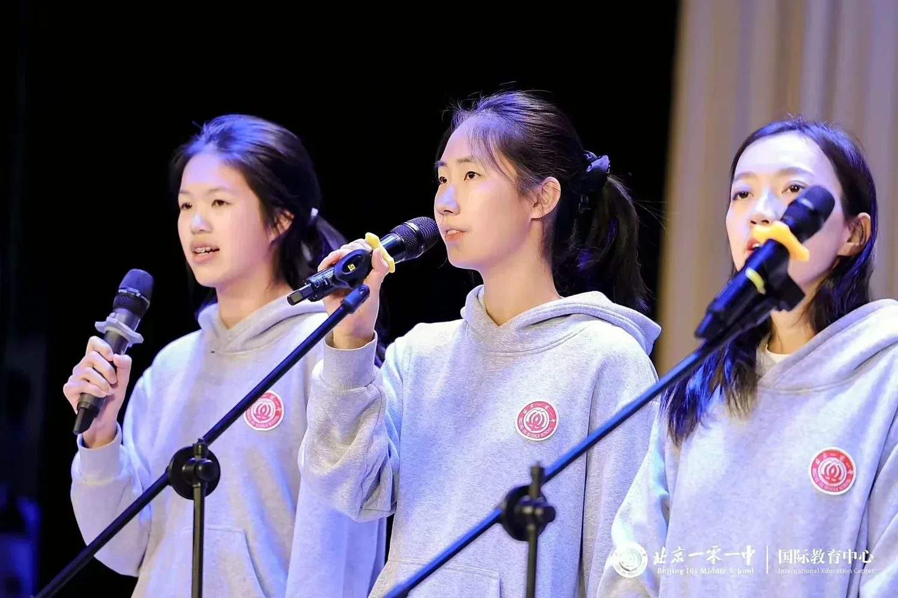
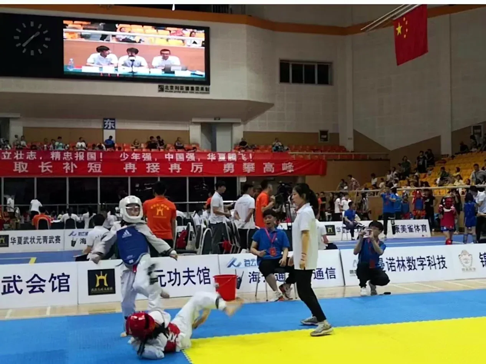
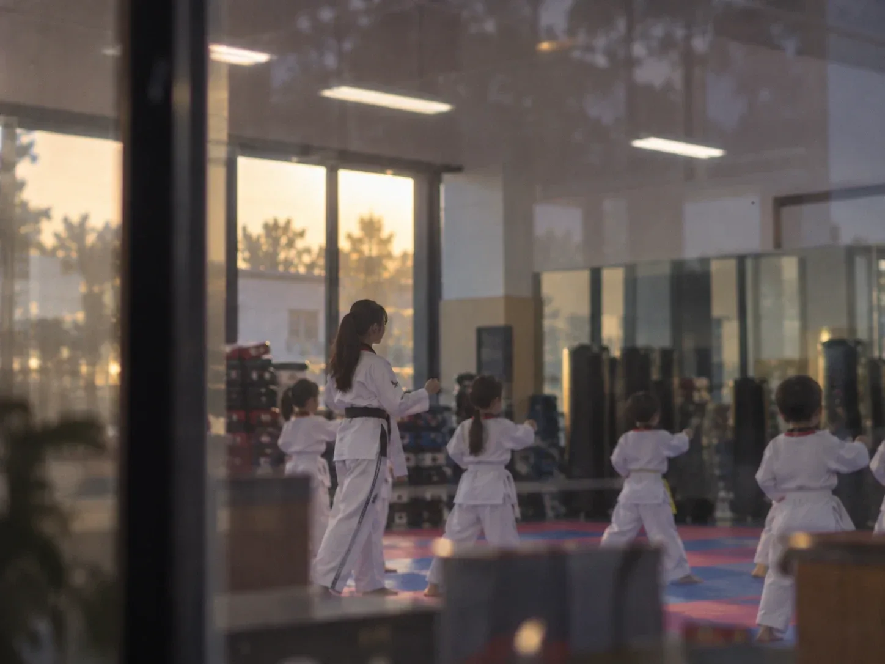

Sound &motion
Performing the guzheng on stage, and eight years of taekwondo on the mat.
I play the guzheng, the 21-string Chinese zither, as a soloist, in duets and with an ensemble. On the mat, eight years of taekwondo have given me a black belt, a Beijing gold medal and a class of younger students to coach.
0strings on the guzheng
0years of taekwondo
0Beijing gold medal
0+younger students coached
01Sound
I perform as a soloist, in duets and with an ensemble, and I sing on the school stage. I performed at our school gala in the spring of Grade 10 and at the school's public performance in the autumn of Grade 11.



02Motion
Eight years of taekwondo and a Beijing gold medal. Since Grade 5 I have also been an assistant instructor at Shangdi Youth Taekwondo Academy, coaching more than 50 younger students in forms, kicks, sparring and discipline.

